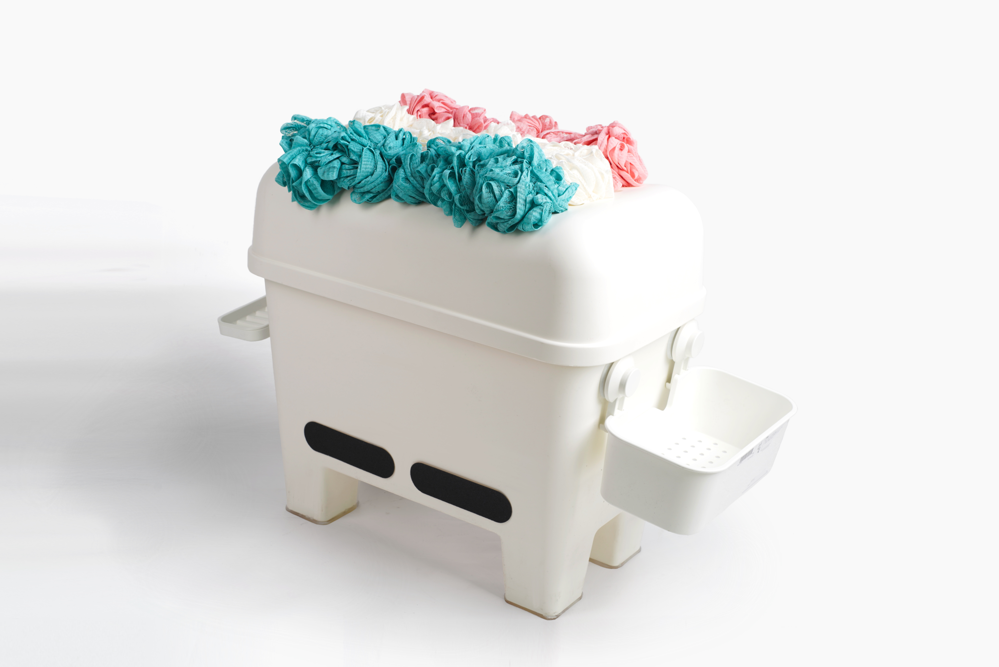
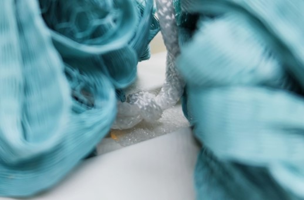
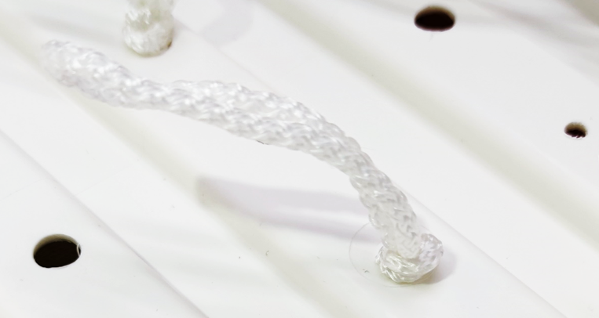
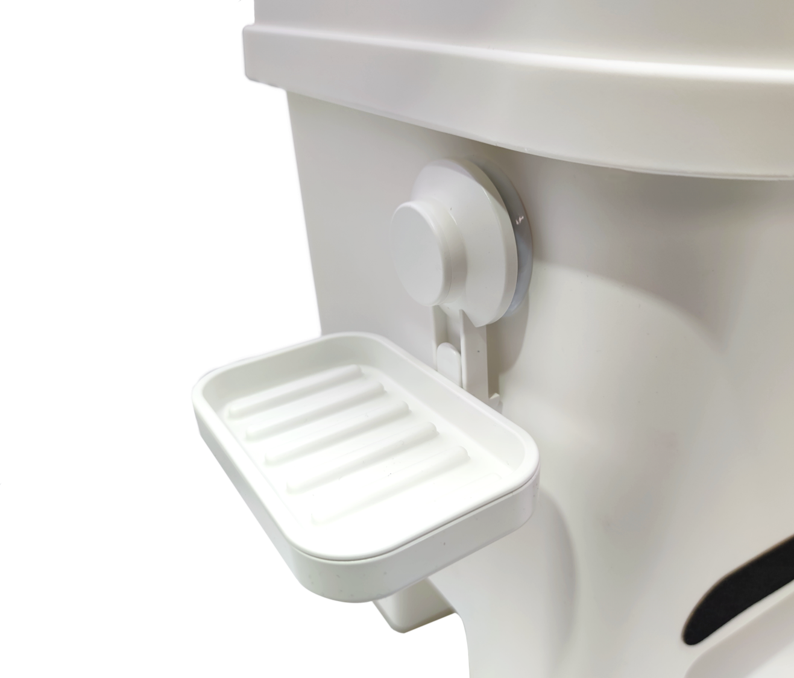

SHOWER STOOL




沐浴凳为老年人沐浴洗澡而设计，老年人洗澡时需坐在凳子上以免滑倒。沐浴凳凳面由可拆卸的沐浴球组成，帮助清洁臀部。左右两侧的沐浴球可轻易取下放回，供洗浴身体其他部位时使用。凳面设有较多排水孔，避免积水。凳子两侧的篮筐和肥皂盒可放置洗浴用品，靠下的砂纸可清洗脚部。凳子底部装有硅胶垫增加防滑效果，使老人可放心安全地使用。
The Shower stool is designed for the elders as they need to sit when showering to prevent from slipping down. The surface of the stool is made up of bath sponges in order to clean the buttocks. Left and right sides of bath sponge can be taken off and put back easily to clean the body when showering. Bathing products can be put in the baskets and the sandpaper can clean your foots. Silicone pads are used for non-skid purpose, which allows the elders to use it safely.